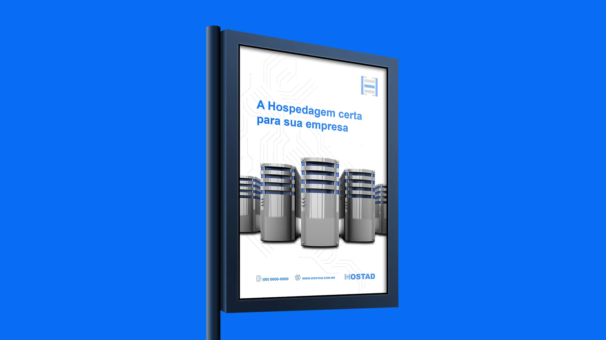
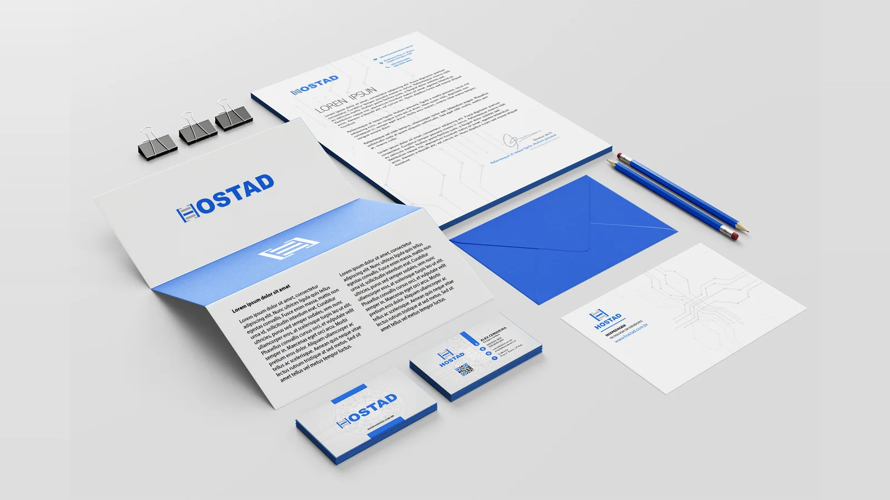

Hostad
Tornando serviços técnicos compreensíveis: reduzir a complexidade percebida na descoberta de soluções de hospedagem digital.


Mídia exterior — “A Hospedagem certa para sua empresa”.
Contexto
A Hostad é uma empresa de hospedagem digital, e sua homepage promove o serviço CloudHost. Em serviços de infraestrutura, a dificuldade não está apenas na tecnologia: está em traduzir benefícios, diferenças entre planos e condições de contratação em uma linguagem que permita decidir com segurança. O case enfoca a fronteira entre complexidade técnica e compreensão do usuário.
A experiência combina navegação institucional, acesso a serviços e destaque para o CloudHost, uma solução de cloud que se apresenta como rápida, poderosa e acessível, para quem procura hospedagem e infraestrutura online. A marca também aparece em mídia exterior, papelaria, crachá e camiseta.
- Setor
- Tecnologia · hospedagem digital
- Organização
- Hostad (hospedagem e CloudHost)
- Período
- Não informado
- Meu papel
- Pesquisa em UX · Discovery · Estratégia de produto
Problema
Como reduzir a incerteza sem esconder o que importa?
Serviços de hospedagem costumam exigir decisões sobre características difíceis de avaliar sem repertório técnico. Se a proposta comunica apenas especificações ou promessas genéricas, visitantes podem ter dificuldade de relacionar a oferta às próprias necessidades. A questão de UX é reduzir a incerteza sem ocultar informações importantes.
Pergunta de pesquisa
Questão central
Como podemos ajudar pessoas com diferentes níveis de conhecimento técnico a compreender os serviços da Hostad, identificar a opção adequada e avançar na jornada de contratação com confiança?
- Q.01Como tornar os serviços compreensíveis para diferentes níveis de conhecimento técnico?
- Q.02Como ajudar cada pessoa a identificar a opção adequada?
- Q.03Como levá-la, com confiança, a avançar na jornada de contratação?
Partes interessadas
O ecossistema de referência reúne visitantes que avaliam hospedagem, clientes atuais, profissionais técnicos, atendimento e suporte, marketing e operação da infraestrutura.
A imagem mostra o backstage do serviço: a infraestrutura e a equipe técnica que a opera. Há diferenças relevantes entre públicos iniciantes e experientes; ela não identifica quais segmentos foram efetivamente pesquisados.
Metodologia
- 01
Entender - 02
Explorar - 03
Conectar - 04
Projetar - 05
Validar
| Método | Objetivo | Base de análise | Etapa |
|---|---|---|---|
| Análise de linguagem e proposta de valor | Entender como a oferta é explicada | Chamada principal, menu e mensagens | Entender |
| Necessidades por segmento | Distinguir públicos iniciantes de experientes | Primeira hospedagem, migração e expansão | Explorar |
| Catálogo de serviços e fluxos de conversão | Organizar a oferta e o caminho até a contratação | Navegação institucional e comercial | Conectar |
| Critérios de confiança | Identificar o que sustenta a decisão | Desempenho, suporte, escalabilidade e preço | Projetar |
Métodos recomendáveis: entrevistas contextualizadas, benchmarking, testes de compreensão e análise de navegação. Não há evidências que permitam afirmar que essas atividades foram executadas.
Pesquisa
6
Grupos de partes interessadas
4
Critérios de decisão a investigar: desempenho, suporte, escalabilidade e preço
3
Situações de contratação: primeira hospedagem, migração e expansão
4
Métodos recomendados para validar
A agenda de UX Research inclui entender o vocabulário usado pelos clientes, a importância relativa de desempenho, suporte, escalabilidade e preço, e as dúvidas que aparecem antes de contratar. Uma questão especialmente importante é diferenciar as necessidades de uma primeira hospedagem das de uma migração ou da expansão de infraestrutura.
Os números descrevem o material apresentado e a agenda de pesquisa; entrevistas, horas de campo e participantes não foram informados.
Evidências
“A Hospedagem certa para sua empresa”
E.01 — Outdoor · chamada principal
“Hospedagem · Tecnologia em servidores”
E.02 — Papelaria · cartão-postal
A mesma marca em mídia exterior, papelaria, crachá e camiseta
E.03 — Observação · pontos de contato
Servidores ilustrados e padrão de circuito, em azul, cinza e branco
E.04 — Identidade visual
Chamada principal do site para o serviço CloudHost, com menu superior e convite para obter informações
E.05 — Website · material do projeto
“www.hostad.com.br”
E.06 — Canal de contato · outdoor e papelaria
Essas evidências sustentam o foco em apresentação e descoberta de serviço. Não há nas imagens formulário de contratação, comparação completa de planos, checkout nem métricas de conversão.
Descobertas
- I.01
A decisão por uma solução técnica depende de converter atributos em consequências úteis para o cliente.
Evidências · E.01 · E.05
- I.02
“Rápido” e “poderoso” funcionam como promessas iniciais, mas não bastam para decidir.
Evidências · E.01 · E.02
- I.03
A experiência precisa explicar para quem a solução é indicada, o que inclui e como evolui conforme a necessidade.
Evidências · E.03 · E.05
Jornada / Ecossistema
Curva ilustrativa da experiência esperada, sem dados medidos. O material mostra a vitrine inicial da jornada; as etapas comerciais e operacionais posteriores não estão documentadas.
Oportunidades
- O.01 · I.03
Como podemos segmentar a oferta por necessidade?
- O.02 · I.03
Como podemos comparar as ofertas de forma transparente?
- O.03 · I.01
Como podemos traduzir termos técnicos e demonstrar benefícios concretos?
- O.04 · I.02
Como podemos conectar com clareza a comunicação comercial ao suporte?
Impacto
1
Proposta visual de website institucional e comercial, com destaque para o CloudHost
4
Peças de identidade e comunicação: mídia exterior, papelaria, crachá e camiseta
O resultado verificável é uma proposta visual de website institucional e comercial, com destaque ao serviço CloudHost e uma estrutura de navegação para a descoberta, apoiada por uma identidade que aparece da mídia exterior à camiseta. A mesma voz, a mesma cor e o mesmo padrão de circuito reforçam a confiança em um serviço que o cliente não vê.
Não foram fornecidos dados sobre lançamento, aquisição de clientes, melhorias de conversão ou redução de chamadas ao suporte.
Entregáveis
- ENT.01
Proposta visual de website institucional e comercial, com destaque para o serviço CloudHost
Formato · interface web · Implantação não informada
- ENT.02
Identidade visual Hostad: logotipo, padrão de circuito e papelaria com papel timbrado, folder, envelope, cartões de visita e cartão-postal
Formato · identidade visual · Produção não informada
- ENT.03
Mídia exterior “A Hospedagem certa para sua empresa”, crachá de identificação e camiseta
Formato · comunicação e pontos de contato · Veiculação não informada
Recomendação
| Frente | Recomendação | Indicador | Base |
|---|---|---|---|
| F1 | Organizar a oferta por casos de uso | Compreensão da oferta | O.01 · I.03 |
| F2 | Apresentar critérios objetivos de comparação entre ofertas | Avanço na jornada | O.02 · I.03 |
| F3 | Explicar termos complexos no contexto e testar chamadas de ação de menor ambiguidade | Cliques qualificados e solicitações de suporte pré-venda | O.03 · O.04 |
Esses indicadores mostrariam se a clareza da vitrine se converte em avanço na jornada de contratação.
Aprendizados
O que aprendi
Uma boa experiência de infraestrutura não simplifica o produto até torná-lo impreciso; ela cria camadas de compreensão.
O que levo adiante
UX Research e estratégia ajudam a tornar decisões técnicas acessíveis sem sacrificar a confiança.